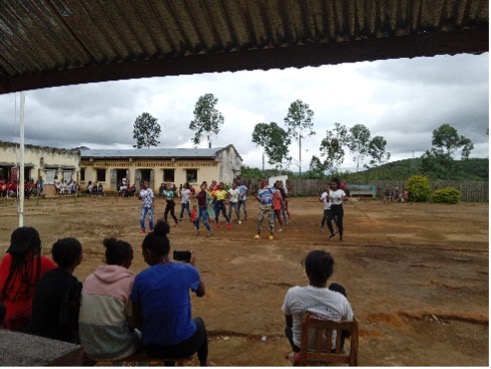
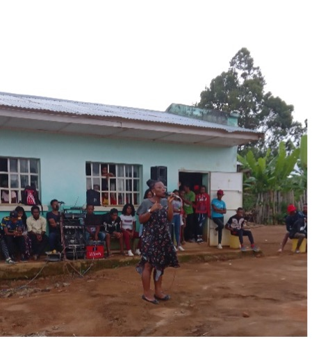
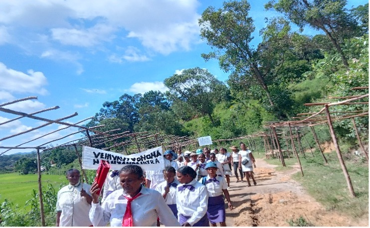

Conférence festival I AM YOUNG AND IMPACTING édition Antananarivo Madagascar
La première édition de la conférence festival I Am Young and Impacting à Antananarivo a eu lieu le 23/01/2023 au TCC Analakely centre-ville. Elle a regroupé un public très diversifié et plus d’une trentaine de jeunes de différent bord leur offrent une plateforme pour s’exprimer, démontrer et exposer leur talent.
Les expositions
Toutes les expositions ont été faite par des jeunes start-up qui ont moins de 3 ansd’existence et chaqu’une d’elle est représenté sous dessous :
La société Kalienous :
Qui est une start-up crée par RABEARISON KOLOINA et RAZANAKOTO TENDRY TIANA deux personnes passionnées par la cuisine et la culture Japonaise/Américaine. Cette start-up met sur le marché un nouveau produit « les pancake » et cela sous toutes ses formes et avec toutes les garnitures réalisables à Madagascar. Tel :+261349134313 .

«Mes propre savon »
entreprise fondée par Dhoiwirou Said étudiant en Chimie : motiver par le taux élevé du chômage dans son pays d’origine les Comores et le désire de mettre en pratique tous ses acquis de l’université décide de se lancer dans l’entreprenariat en devenant savonnier et tout ressèment sait lancer dans la fabrication des bougies.
La société Bio’Channi
fondée par CHAN SHING Bao Ornella, une jeune femme amoureuse de la nature. Bio’ Channi a été fondée afin de valoriser l’engrais biologique ainsi propose de l’engrais bio et de l’humus capable de se débarrasser des imperfections de la peau et même de guérir des maladies de la peau. Tell :+261322711786
La start-up ‘’Z’ Art Aina’’
qui signifie : partager la vie à travers l’Art. Fondée par Zo Nambi produit des articles de rangement, des trousses, pochettes, sac. Et se différencie par leur conciliation de l’art et du bien-être. Tel :++261343441011/+261325187959+ Adresse Mail : zartainaaminao@gmail.com

Lormafood
un restaurant virtuel qui fait des livraisons pour des particuliers, petites cérémonies et grandes cérémonies sur commande fondée en 2020 durant la crise de la covid19 par Manuella et Loraine. Tel :+261341819184/+261347590695.

L’entreprise « H’anah cosmétique et bien-être » :
fondée par Marc et Kezyah est une entreprise qui promeut le tout naturel dans les matières utilisées dans des savons artisanaux handmade, des huiles essentielles, des plantes avec des pots en terre cuite. Contact Tel :+261347955672/+261341834737. .

L’entreprise Arhum’Art:
fondée par NOFE Manuella est une entreprise spécialisée dans la fabrication artisanale et la vente des rhums arrangées. Slogans préférés « Après la pluie, vient le beau temps » c’est avec cet esprit toujours résilient et optimiste qu’elle arrive à surmonter les défis et les obstacles qui se présentent à elle quotidiennement. Tel :+261340158592,, adresse mail :manuellanofe@yahoo.com .

La Jeune, talentueuse
et créative Helizo Razafindrakoto est une passionnée de la décoration événementielle. IAYI et ses invités ont eu l’honneur d’admirer son talent à travers la décoration de la salle avec un sens de créativité unique et très séduisante. Tel :++261341215129, .

« WinDjaz Sambos »
par Djazilaty ASSANE est une start-up crée pour partager sa passion avec le public. Elle a développé cette passion depuis sa tendre enfance en voyant sa maman le faire constamment à la maison pour les moments de partage et de communion en famille et elle à commencer en faire dès l’âge de 11 ans jusqu’à ce jour et elle dit pensée que c’est sa seul passion. Tel :+261347813592, .

Yolène Claudiane
est une dessinatrice artistique ( ornella aide moi à complete et je ne trouve aucune de ses photos) .
La Détente nous avons eu la prestation du :
par Djazilaty ASSANE est une start-up crée pour partager sa passion avec le public. Elle a développé cette passion depuis sa tendre enfance en voyant sa maman le faire constamment à la maison pour les moments de partage et de communion en famille et elle à commencer en faire dès l’âge de 11 ans jusqu’à ce jour et elle dit pensée que c’est sa seul passion. Tel :+261347813592, .

ANJARAMORASATA Liantsoa gagnante du prix de chant SCHOOL VOICE en 2014:
Elle dit ; j’ai toujours su que le chant était ma passion et je ne compte absolument pas rester là mais je continuerais de chanter toute ma vie. .


Les interventions
CHAN SHING Joanna une étudiante en psychologie à l’université catholique et travaillante en freelance de puits plus de 3ans a partagé avec nous sur le leadership et les 7 personnalités difficiles.

L’intervention de Monsieur RAKOTOARIMALALA Tahina
homme de principe et de valeurs avec une expérience de plus de 30 ans dans l’entreprenariat et actuellement opérant dans plusieurs domaines est à la tête de sa propre entreprise a partagé avec nous son succes story et a encouragé les jeunes a se lancé dans l’entreprenariat.
L’intervention de RANJANIRINA Claudiana vassilissa Formatrice
des nouveaux mannequins, modèle Makeup a partagé avec nous sa passion dans la transformation des vêtements usés et son travail en collaboration avec d’autres stylistes pour apporter sa contribution à la mode Malagasy.
L’intervention de mademoiselle Rakotoarivelo Tifanie
une passionnée, engagée à la transformation de l’Afrique. Elle est la fondatrice de l’entreprise « Apostroprh’Partners » spécialisé dans le consulting and marketing où on accompagne les entreprise, marque et acteurs dans leur stratégie d’image de marque institutionnelle. Elle a partagé avec nous de manier concrète en répondant aux questions sur son parcours en tant que jeune
L’intervention de mademoiselle Lindsay NJONGER
doctorante en médecine créatrice du podcast Mélind- Mélo où elle parle de spiritualité/Développement personnel/Mindset. CEO de La voix Limbique une agence de marketing digital. Elle a partagé avec nous son parcours en tant que débutante dans le Podcasting et comment elle gère sa passion avec ses études de médecine.
L’intervention de mademoiselle Saida Matazaky
une jeune étudiante et activiste environnementale et climatique a partagé avec nous des projets de développement durable et l’importance de la protection de l’environnement.
Lovasoa RASOLOFOARIVELO, traductrice-interprète /Assistante Administrative et commerciale/ Amatrice- présentatrice parlent quatre différentes langue donc Anglais-Français-Malagasy-Portugais.

Winnie LONTSI
Responsable RH œuvrent dans l’encadrement et l’émancipation des jeunes a partagé sur la gestion du temps.